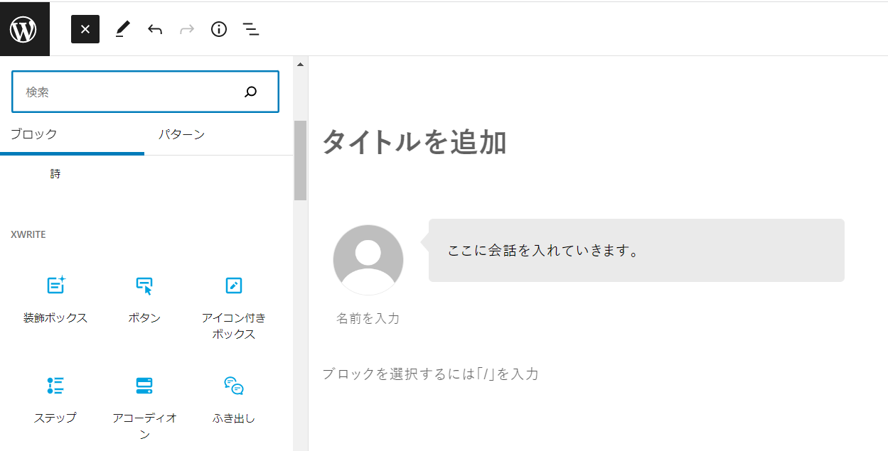
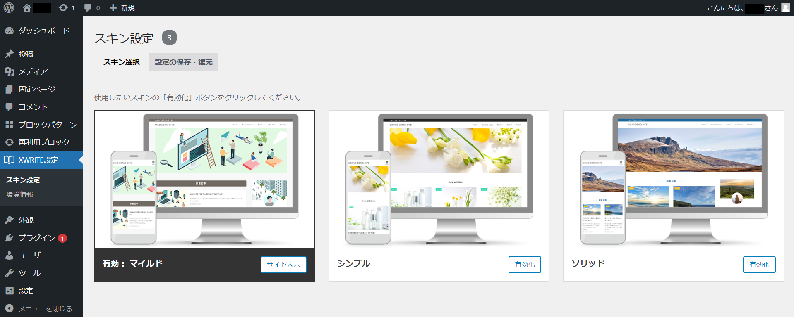
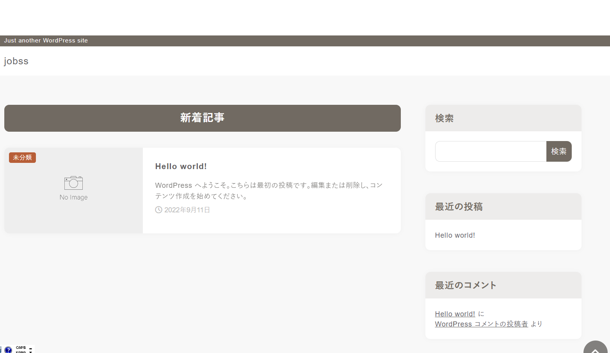
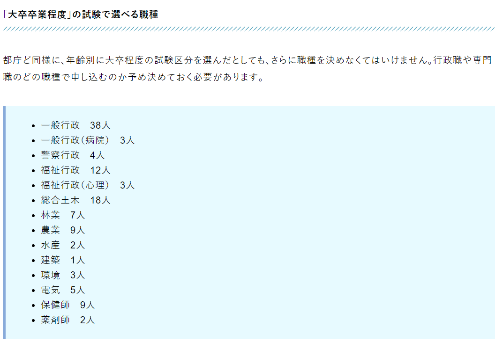

XWRITE（エックスライト）はエックスサーバーが提供しているワードプレステーマになります。 初心者向けのテーマとしてブロックエディターを採用しています。
当サイトでは、このエックスライトのテーマを使って特化型サイトの「Jobss」を作っていますが、 ブロックエディターの利便性が高いので、記事作成がとても効率的になっています。デザイン性もそこそこあります。
本格的な配布は有料となる2023年9月からで今はまだバージョンアップを重ねている段階ではありますが、 エックスサーバーが提供しているということもあって今後かなり完成度の高いテーマになっていくでしょう。
このページでは実体験をもとにしてエックスライトがどんなワードプレステーマになっているのか説明をしていますので、 エックスライトがどんなテーマなのか気になっている人はぜひ参考にしてください。
まず大きな特徴としてエックスライトはブロックエディターに対応しているワードプレステーマになります。 さらにただ対応しているだけではなく、記事の作成効率が考えられたクオリティで作りこまれています。
Swell（スウェル）のようにオリジナルブロックを搭載していますが、このオリジナルブロックがあることで効率的なライティングを可能にしています。 また通常のブロックについても機能性がよく、ブロックを選んでからサイドバーでさらに詳細編集が出来るようになっています。

UIを兼ね備えたブロックエディタ―によってライティングが各段にしやすくなりました。マウス操作だけで様々な機能を設置することができます。
また、レンタルサーバー事業者であるエックスサーバーが制作していることもあり高速化についても期待がもてます。 レンタルサーバーでは国内でも最も速いサービスを提供していて生成。そのためテーマについても高速化に対応したテーマになっていくでしょう。
料金は有料テーマとしては毎月支払うサブスクリプション型になっています。 月額825円～になります。
今ならキャンペーンを実施しているため2023年9月までに登録すれば1年間は無料で利用することが出来ます。
デザインスキンは3種類用意されています。「マイルド」「ソリッド」「シンプル」の3種類となります。
今後もデザインパターンは追加されていく予定となっていて、 同じテーマであっても様々な用途に対応したデザインを実装できるようになっています。

「マイルド」が最もオーソドックスなデザインスキンとなりますが、これはエックスサーバーの公式ブログのデザインと一緒のスキンになります。
丸みのあるサイトデザインになっていますが、丸みを外したい場合は管理画面で簡単に編集できます。

「ソリッド」はマイルドよりもカチッとしたデザイン。「シンプル」はECサイトのようなデザインになっています。
エックスライトのデメリットについて簡単に説明します。
テーマ専用のオリジナルブロックについては数が10個ほどになります（12月）。これはコクーンやSwellの半分ほどとなります。
毎月のバージョンアップによって月に1つほど追加されていますので、有料になる2023年9月までに同等となることを期待しましょう。
9月にテーマ配布されたばかりと言うこともあり、見本となるサンプルサイトや活用事例サイトがそこまで多くありません。 これも今後増えることを期待きましょう。
料金形態については人それぞれ好みが変わってくると思いますが、エックスライトは有料テーマではあまり採用されていないサブスクリプション型の料金体系になっています。
毎月825円～となるため、半年で4,950円。1年で9,900円となります。
最初にコストをかけたくない方には向いていますので、半年限定や1年限定でまず作ってみてその後のアクセス数次第でどうするか決めたい。といった考え方の方には適しています。
ちなみに、SWELLの料金が買切り型で1万7600円となるため、エックスライトを1年6ヶ月以上でSwellより料金がかかることになります。
エックスライトのブロックエディターは様々な工夫がされていて、かなりクオリティが良くなっています。
表を作るテーブルブロックで説明してみましょう。エックスライトではテーブルブロックを選んでから、さらにサイドバーで詳細編集ができるようになっています。
セルごとの幅の広さだったり、1行目の背景色だったり、デザインパターンを選べたり、スマホの時はレスポンシブで横に広がってしまう部分を可変にさせたり。 こういった事がマウス操作で出来ます。
単純なブロックエディターより工夫されたエディターになっていると言って良いでしょう。
オリジナルブロックの数が多くないことをデメリットとして紹介していますが、そもそものエディターの質が良いため今後オリジナルブロックが充実してきたら、 Swellと同様に人気テーマとなる可能性は充分にあります。
ブロックエディターのクオリティの高さによって「おきたいブロックを簡単に速く設置ができる」ようになっています。
修正についてもサイドバーの詳細編集でマウス操作でできるため、時間を書けずに編集ができます。
結果としてライティング効率が良くなり、時間を短縮した記事作成を可能にしています。
いくつかのプラグインについては既に実装されているため、入れる必要がありません。
目次を生成する機能も最初から備わっているので見出しを作るだけで自動的に目次が作成されていきます。
他にもSEOの機能としてメタディスクリプションの設定、OGP設定などはプラグインを入れることなく設定が出来るようになっています。
「All in ONE SEO」「yoast SEO」などの総合計SEOプラグインは機能がひとまとめになっていて人気がありますが、プラグインを入れることで重くなるデメリットもあるため、 そういったプラグインなしに記事を作ることが出来るようになっています。（ただし、今の時点ではサイトマップ作成プラグインなどは個別に入れる必要があると思っています）
デザインスキンは3種類ありますが、今後さらに追加されていくとされています。通常のブログだけでなく法人向けのサイトやショップ向けのサイトのデザインスキンも追加されると期待したいところではあります。
特にフルスクリーンでぱっと素材や動画をかんたん配置できるデザインスキンが登場すれば人気のスキンになると思います。
エックスライトの開発はレンタルサーバー事業者のエックスサーバーが開発、提供をしています。
法人による安定的なアップデートを実施していて、の10月以降のアップデートでは毎月オリジナルブロックを1個づつ追加してくれています。
有料化にともないオリジナルブロック、デザインスキン、新しいサービスの実装など様々な面で充実したテーマになってくれるでしょう。
エックスライトには専用サイトがあり、質問や投稿ができるフォーラムが存在しています。
わからない点は質問ができます。また実装の要望を出すことも出来ます。そのため「こんな機能があれば助かるのに」といったことをフォーラムで依頼することが可能になっています。
マニュアルについてもオンラインマニュアルが完備されているので、基本的な操作についてはネットで調べることが出来ます。
自分の転職ブログでは装飾ボックスで目立つボックスを作り、そのなかにリストを入れるというカスタマイズ例を多用しています。
「アイコン付きボックス」や「タイトル付きボックス」と併用することで、より見栄えのよい記事が出来ると思います。

で最も人気のある有料テーマではないかと思うのがSwellになりますが、基本的にエックスライトはSwellと同様にブロックエディターを採用しています。
オリジナルブロックの数なども倍近く違うため、Swellの方がまだまだ良いテーマだと思いますが今後のアップデートによって、じわじわ機能が追いついていくことが予想されます。
Swellの17,000円はちょっと無理という方は、エックスライトを始めてみましょう。
初心者の方の場合、かならず1年間続けられるというものでもありません。この場合、買切り型の有料テーマを購入するのは勿体ないと思いませんか？ エックスライトであれば毎月825円～なので半年なら4,950円だけの出費で抑えられます。
買切り型の有料テーマを購入する方は、すでにアクセス数がついていて移行をする人だったり、ある程度の経験があってアクセス数をもてる予想が出来るような方だと思います。 「初めて作るけど、最初から有料テーマで始めてみたい」という方には、買切り型のテーマは向いていません。
初心者の方だからこそ、サブスクリプション型が向いているとも言えます。また2023年9月までは無償提供されています。
ブロックエディターは2018年に登場してからずっと人気がありませんでしたが、ここ最近テーマによってはブロックエディターの凡庸性がぐっと良くなってきました。
エックスライトのブロックエディターもその1つだと思っています。ブロックエディターが不得意でこれまで避けていた人でも、おそらく一度記事を書いてもらえれば ブロックエディターが変わってきていると感じる人はそれなりにいるでしょう。
2023年9月までは無償なので、それまではコストがかかりません。
エックスライトを一言で表すと、新しいブロックエディターを搭載した初心者向けの有料テーマと言えると思います。
まだまだ開発が始まったばかりなので、他の有料テーマと比べると機能性がない部分も多いと思いますが、毎月のアップデートによって 確実にテーマの内容が良くなっています。実際に有料化する2023年やそれ以降は着実によいテーマになっていると思います。
私、本人としてはブロックエディターは好きではありませんでしたが、エックスライトのブロックエディターはかなり記事が作成しやすくなっていると感じています。 まだまだ無料提供が残っているので、有料テーマに興味のある方はぜひ導入してみてはどうでしょうか。

demiglaze
Web制作を始めて約19年になります（HTML/css、Photoshop、Webマーケティング）。2005年から当サイトの運営を開始。 これまでに300個以上のドメインを取得、10社を超えるレンタルサーバーを利用してきました。